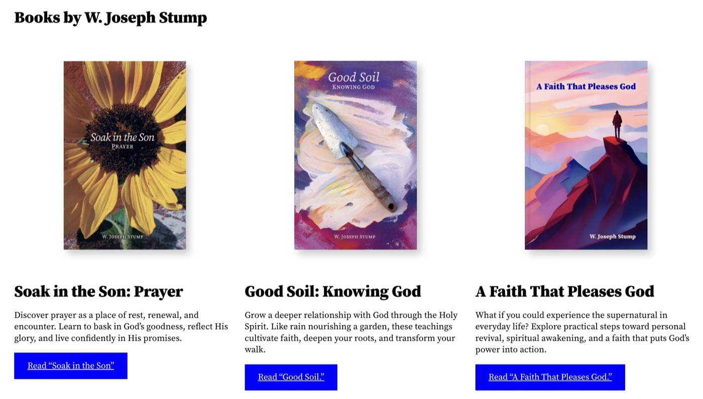
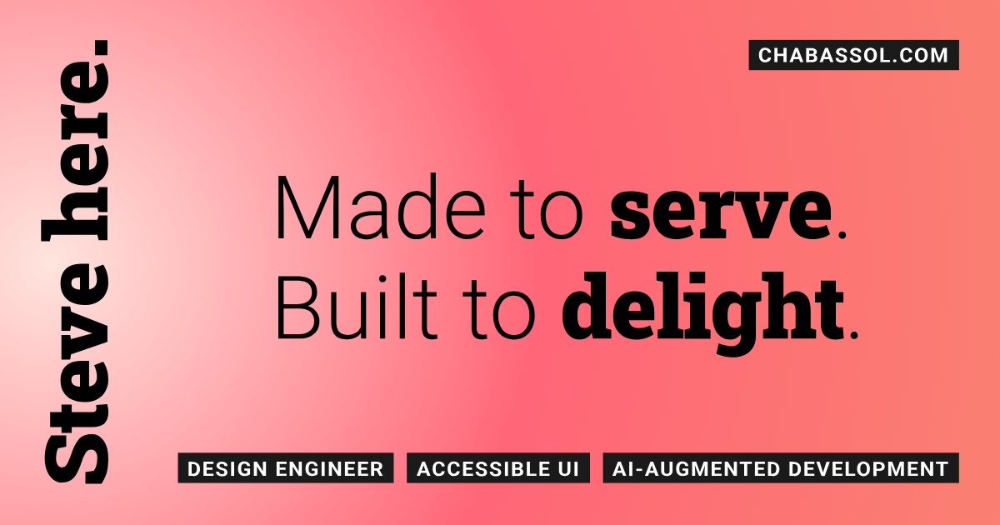

The XPS Relaunch
Led implementation for an embargoed global launch covered by Reuters and Ars Technica.
Every color, face, and component on this site.
This is the reference for how chabassol.com is built and why. A Swiss grid, two Roboto families, one salmon gradient, and space doing the work that rules and borders usually do. Every demo below runs on the site's own stylesheets, so this page stays true when the site changes.
Twelve columns, a 1.5rem to 2rem gutter, and a wide left column for vertical labels. Content snaps to the grid or it does not ship.
Roboto Slab for anything that announces, Roboto for everything that explains. No third family, not even for code.
Salmon, coral, and a pale blush, all in one gradient. Everything else is black or white.
Padding and margins make the structure. No dividers, grid lines, or boxes in the layout. Black tape marks what you can act on.
One light theme, declared with color-scheme. Contrast is tuned for the gradient, not left to chance.
Keyboard, screen reader, reduced motion, forced colors, and print are designed in, not patched on.
A black and white system with one warm family. The three tints exist only inside the page gradient and the gallery tiles. Text always sits in black, so the weakest pairing on the page is black on coral.
Ink
Tape
Tape ink
Pale
Coral
Salmon
Selection
Mat
radial-gradient(circle at 5% 50%, pale, coral, salmon) on the body. The header has no background of its own: the nav and Top float over the gradient and the page as tape.
| Pairing | Ratio | Where |
|---|---|---|
| Ink on white | 21.00 : 1 | Viewer, print |
| White on tape | 17.40 : 1 | Buttons, tags, links |
| Ink on pale | 17.40 : 1 | Gradient start |
| Ink on selection | 14.17 : 1 | Selected text |
| Ink on salmon | 8.40 : 1 | Gradient end, passes AAA |
| Ink on coral | 7.42 : 1 | Gradient middle, passes AAA |
Roboto Slab at weight 900 does the shouting, tightly leaded and slightly tracked in. Roboto at light weight carries the big ledes, and at regular weight carries the reading. Both fonts are self-hosted variable files, weights 100 to 900.
Steve here.
The XPS Relaunch
Color and sound
Dell Technologies
Image 3 of 6
Design engineer.
Accessible UI.
AI-augmented development.
Performant and accessible is the floor. Above it, I want the work to be beautiful enough to delight yet practical enough to feel intuitive.
An outside agency designed the campaign. My job was to make it real on Dell's site. The pages shipped on time, and XPS sold out in two countries.
Before Dell, I spent fifteen years at Carnegie Mellon University, where I designed the templates and brand shared by hundreds of university sites and crafted web accessibility guidelines.
Implementation Lead
Accessibility Standards
Books, print pieces, banners, and the website.
0123456789
At 1140px and wider the page runs on twelve columns inside a shell that tops out at 1560px. Below that, everything collapses to one column no wider than 40rem. Section labels stand vertical in column one.
Text wrapping: running text uses text-wrap: pretty so a paragraph never ends on a single stranded word. Headings and ledes use text-wrap: balance so short display lines break evenly.
Gutter 1.5rem (--gap) on the page head and the case list, 2rem inside case and record sections. Page padding 2.5rem, or 1.25rem under 768px (--shell-pad).
Small steps (.25 to 1.5rem) sit inside components. Paragraph spacing is its own token, 1.1rem (--para-gap), shared by case, resume and homepage prose. 2 to 2.5rem separates items. 5 to 8rem separates sections: 7rem between record sections, 8rem between case studies.
Interactive things are black tape: a dark ground, white text, and a tight eyebrow-sized label. Hover flips it to white with a 2px inset ring. Focus adds a 3px black outline offset by 3px. Nothing else on the page looks like this, so anything taped is something you can use.
The Top button and the footer links use the same tape style. Top is fixed at the top right, centered on the nav's line, and slides in from above once you scroll past the first screen.
Every item is tape. The current page swaps the dark ground for the pale tint (--tint-pale) with black text. The real nav is fixed at the top left, so it stays with you as you scroll, and it floats over whatever passes beneath it. Where the row would run under Top or the Hebrew mark, the home link keeps the first line and the other items drop to a second line beneath it: under 410px on this page, where four items sit in the row, and under 340px on the three-item pages.
Hidden off screen until it takes keyboard focus, then it slides in over .18s. Tab once on any page to see it.
On this page
An icon, an organization, and a role. On wide screens the whole line is set sideways in the left column.
Led implementation for an embargoed global launch covered by Reuters and Ars Technica.
Fifteen years of homepages for my alma mater, with the front end in my hands.
The one large tape link. It takes the body size instead of the eyebrow size, with the same weight, tracking, uppercase, and hover. It sits centered under a card grid and leads to the full list. One per page.
Led implementation for an embargoed global launch covered by Reuters and Ars Technica.

Fifteen years of homepages for my alma mater, with the front end in my hands.

The templates, authoring tools, and brand standards behind hundreds of university sites.
Three cards across from 700px up, one column below. Each is a 4:3 picture, a tape link for the title, and one line at body size. Nothing else: no company name, no second link. The card title is the only link in the card.
Black bars, 7rem tall, standing on a baseline. The homepage music section runs 56 of them across the full width, 24 under 768px. Purely decorative, so hidden from assistive tech. Each bar carries its height in --h and its place in --i.




Each tile is 3.75rem square with a .25rem gap. The image is zoomed 3x, turned to grayscale, inverted, and blended over coral, so a screenshot becomes an abstract detail. Each tile opens a full-page carousel at that image. The last tile shows the video variant.
Implementation Lead
0123456789
One glyph per case study, drawn from Material Symbols Outlined. The homepage section labels borrow six of the same glyphs for their own meanings: service (accessibility), range (design system), passion projects (books), wonder (CMU), direction (XPS), and work (AI review). The font is a 3KB subset holding only these twelve, so adding an icon means re-subsetting the file. Icons are decorative and always hidden from screen readers.
Motion is subtle and written in CSS. It is tied to scroll position rather than to timers. The drift only runs for people who have not asked for reduced motion, and the Top button fades instead of sliding for them. None of it runs in browsers without scroll-driven animation: the content just sits still and Top stays hidden. Scripts only manage focus and the image viewer; nothing moves in JavaScript.
| Element | Effect | Range |
|---|---|---|
| Page head | Drifts down 6rem as it leaves | First 80vh of scroll, wide screens |
| Case sections | Alternate slow and fast drift of 5rem | While in view, wide screens |
| Homepage sections | Even sections drift slow, same 5rem | While in view, wide screens |
| Resume sections and jobs | Same alternating drift of 5rem | While in view, wide screens |
| Equalizer bars | Each bar scales between 40% and 100% of its height, staggered by 110ms, 2.6s alternate loop | Motion allowed only |
| Top button | Slides down from above, or fades in when motion is reduced | 101vh to 111vh of scroll |
| Skip link | Slides in on focus, .18s | cubic-bezier(.22, 1, .36, 1) |
| Image viewer | Smooth scroll between slides | Motion allowed only |
| Width | What changes |
|---|---|
| 700px and up | Jump items and principles run two columns, terms split into term and definition, homepage cards sit three across |
| Under 410px | Four-item nav wraps: chabassol.com on the first line, the rest beneath it. Three-item navs wrap under 340px |
| Under 768px | Page padding drops to 1.25rem, the equalizer keeps 24 bars |
| Under 1140px | One centered column, 40rem at most |
| 1140px and up | Twelve-column grid, vertical labels, scroll-driven drift. Cases without a figure sit three across, two across for Moving 250 Sites and Patent Pending |
| 1560px | Shell stops growing and centers |
Printing strips color and motion and hides the header, the jump list, and the image viewer. Page heads drop to 26pt, body text to 10.5 or 11pt, and sections avoid page breaks, set apart by thin gray rules.
The resume prints as two US Letter pages on a three-column grid, the same frame as the case sheet: section labels in a .7in column, employers, roles, and dates in a 1.4in column, and the text in the rest, with .18in gutters. Ink is black on white, with #555 for places and dates, and a 1pt black rule opens each section. chabassol.com and Pittsburgh, PA, USA sit over a rule at the top of page one. Volunteer prints; Proof and the LinkedIn link stay off paper. The name sets at 34pt in heavy slab beside a 13.5pt light lede; employers set at 13pt slab, summaries at 10pt light, body text at 9.25pt on a 12.5pt line, and labels and role titles at 6.5pt in the eyebrow caps, with square bullets. Gaps step off the 12.5pt line: 2pt between list items, a half line between rows and roles, three quarters above each role list, and a full line between sections. Page two opens on Carnegie Mellon under its own rule, labeled Experience. Each page carries its count, 1 of 2 and 2 of 2, in the bottom right corner. Chrome's Save as PDF keeps the headings, lists, and links tagged.
favicon.svg, favicon.ico, and icon.png for touch devices.

1200 by 630, used for link previews.
| File | Holds |
|---|---|
| css/site.css | Fonts, tokens, base type, links and tape, header, page head, ledes, call to action, case meta and titles, footer |
| css/home.css | Homepage sections, subheads, equalizer, cards |
| css/portfolio.css | Jump list, case studies, gallery tiles, image viewer |
| css/resume.css | Record sections, jobs, roles, terms, degrees |
| css/animations.css | Scroll-driven motion, behind motion and support checks |
| css/design.css | Layout for this page only |
| js/jump.js | Focus after in-page jumps |
| js/viewer.js | Image viewer: one Previous and Next pair for the whole carousel, and a history entry so Back closes the viewer |
Roboto, Roboto Slab, and a Material Symbols subset, all self-hosted as woff2 under fonts/. Text faces load with swap. The icon font loads with block, so a missing glyph never flashes as an empty box.